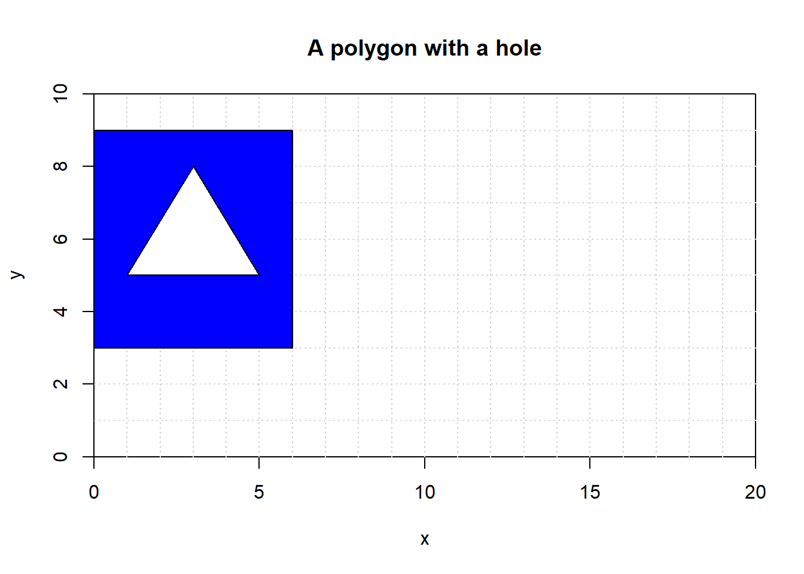

Integer Coordinates
Polygons with integer coordinates can be represented using Pick’s Theorem: \[ A = i + b/2 -1 \]
With number \(i\) of lattice points in the interior and number \(b\) of lattice points on the edges of the polygon.

In the example polygon above there are 7 interior lattice points (shown in red) and 8 boundary points (shown in green). Using the equation above with \(i=7\), \(b=8\) we get \(A = 7 + 8/2 − 1 = 7 + 4 − 1 = 10\) \(A=7+8/2-1=7+4=10\)
This can be proved using the function created in the individual project:
a <- c(2,3,4,5,5,5,3,1)
b <- c(1,2,3,4,5,6,5,4)
detvec <- c() #an empty vector to store sum calculations for every i
#so mistakes can be easily seen
area <- function(x,y, graph=0, colour="orange") {
for(i in 1:(length(x)-1)){ #avoiding the last co-ordinate pair
det <- x[i]*y[i+1]-x[i+1]*y[i] #calculating the determinant
detvec <- append(detvec, det)
}
i <- length(x) #the final calculation with x[i+1]=x[1]
det <- x[i]*y[1]-x[1]*y[i]
detvec <- append(detvec, det)
if(graph != 0){
x_range <- range(0, x)
y_range <- range(0, y)
plot(x_range, y_range, type='n')
polygon(x,y,col=colour)
}
detvec
abs(sum(0.5*detvec))#Using 'abs' to return a positive number
}
area(a,b, 0)## [1] 10So the area is 10 as found using Pick’s Theorem, which is clearly simpler.
This theorem, much like the function in the individual project does not work for polygons with holes. For a polygon with \(h\) holes and a boundary of \(h+1\) simple closed curves, there is another formula for the area: \[i + b/2 + h-1\]
For example, the non simple polygon (below) with outer vertices \((0,3),(6,3),(6,9),(0,9)\) and inner vertices $ (l= c(3,3,9,9))1,5),(3,8),(5,5),(1,5)$ would have an area of $ 15 + 30/2 +1-1=30$.
c = c(1,3,5,1)
d=c(5,8,5,5) #triangle
k= c(0,6,6,0)
l= c(3,3,9,9)
plot(c(0,20), c(0,10), type='n',xlab="x",ylab="y",main="A polygon with a hole", xaxs="i", yaxs="i")
grid(20, 10, col = "lightgray", lty = "dotted",
lwd = par("lwd"), equilogs = TRUE)
polygon(k,l,col="blue")
polygon(c,d,col="white") 
This too can be checked using another function from the individual project:
holes <- function(x,y,s,t){
area <- area(x,y)-area(s,t)
area
}So the area of the blue hole polygon is 30.
Interestingly, the only regular polygon that can be constructed with integer coordinates is the square. Infinitely many irregular polygons can be constructed, but only regular squares. The proof of this is too long but can be found here.